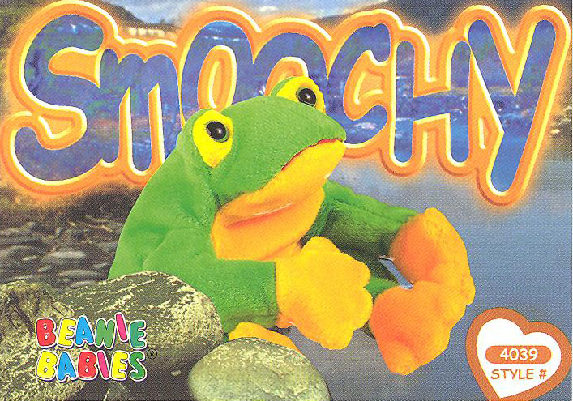
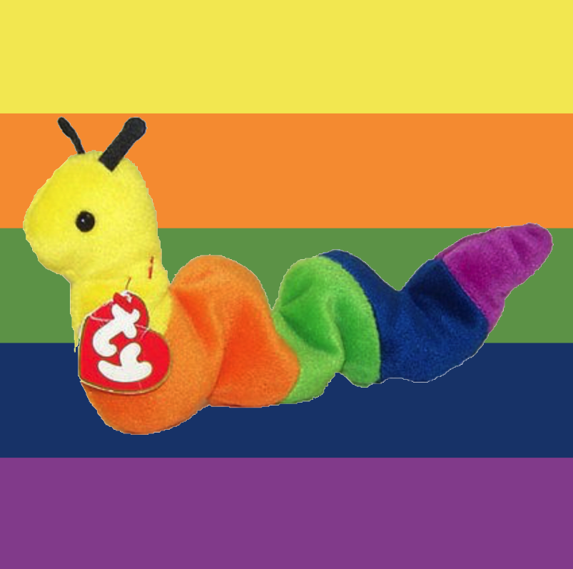
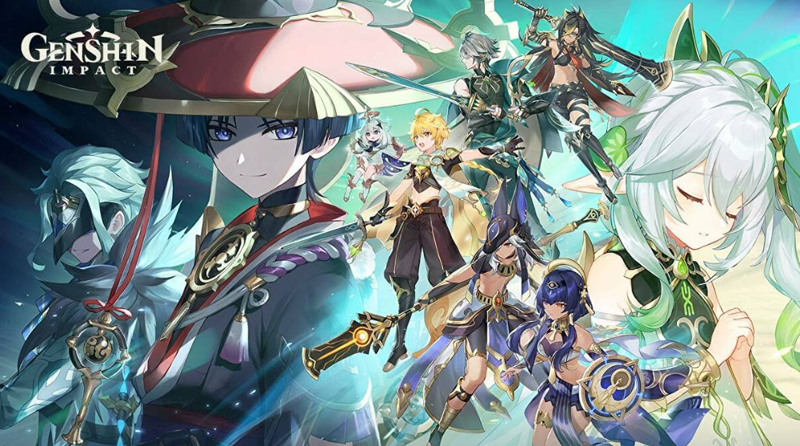
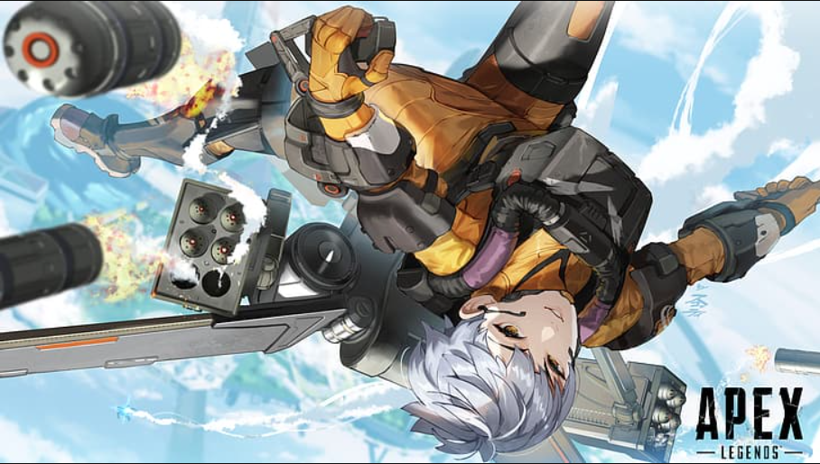
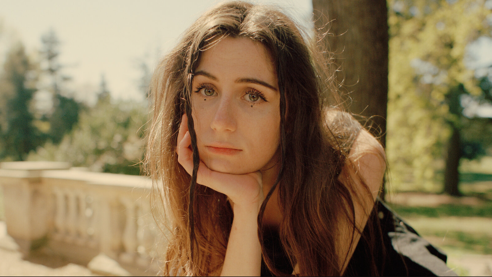

Canyon's Favorite Things!


Hobbies
I have a lot of interests in a lot of differant things!
This list only covers my favorite hobbies I have had over the years.

Art!
Art is a huge part of who I am. It has been with me ever since I was a really young kid, and I still love consuming and creating art. Check this site out if you are interested in learning more about my art and identity.


Video Games!
Video games have shaped a lot of my identity, and definetly consume a lot of my time. This is a hobby I have had since I discovered Skyrim, which is one of my favorite games out there! I hope to one day develop my own game, help produce one, or design characters/character skins for games. Here are some of my favorite games I have played over the years;
-
Genshin Impact
-
Apex Ledgends
-
Skyrim
-
Undertale
-
Halo 5
-
Portal 2
-
Amongus
-
Overwatch
-
Castle Crashers
-
Monster Prom
-
Saint Spell's Guide
-
Crossy roads

Cosplay!
Cosplaying has been a big hobby of mine since I was a freshman in highschool. It has defiently fallen off of my main hobbies since I joined college and became extremely busy, and also because covid shut down cosplay conventions for about 2 years. However, I still create costumes and plan on attending conventions again soon! Here are some of the cosplays I have put together in my time;

-
Bowsette (meme girl)
-
Sheeta (castle in the sky)
-
Xiao (genshin impact)
-
Mercy (overwatch)
-
D.va (overwatch)
-
Widowmaker (overwatch)
-
Tracer (overwatch)
-
Blue Pearl (steven universe)
-
Polly Geist (monster prom)
Music
Music has changed me as an artist, a person, and has even changed my style. I owe so much to musicians, so I hope you can give back to some of these wonderful artists by checking out my favorite songs from my favorite artists.
- Dodie

Dodie is such a huge inspiration to me as an artist. She is raw, honest, and has a beautiful way to describe even the most ugly of situations. Her open-ness and honesty about her mental health and her chronic depersonalization helped me come to terms with mine. My favorite song of hers is lonely bones. This song was written during quarentine, to help her cope with the long lonely months. She wrote it, hoping one day the harmonies would be sung with more than just her voice.
- Ginger Root

I fell in love with Ginger Root when I discovered their relatively small album called 'city slicker'. Every single song is so incredibly good. Ginger root has a wonderful 80's japaneese/american vibe to it. Once you watch the music video for "Over the Hill" im sure you'll understand this unique vibe. I love every single one of their songs, and it was super hard to choose just one favorite. I cannot reccomend Ginger Root enough, though. I genuinely mean it when I say I love every single song.
- Peach Pit

In my freshamn year of college, I came across peach pit's song 'tommys party'. At this time in my life, my dog had just passed away, and one of my closest friends had just left me without explination. I was so devastated, but that song gave me a funnel to pour my emotional turmoil into. I owe so much of my healing to tommy's party. But that song definetly isnt super catchy, it's really sad and good for venting. To keep things positive, here's another favorite peach pit song of mine, Vickie. This is such a jam, and really always gets me smiling. If you do want to feel heartbroken though, Tommy's party will also be here for you.
- Joey Valence

I found Joey Valence and Brae about a year ago, when they were still relatively small. Since then they have reached slight virality, which was well deserved. They make 90's style rap, often with a lot of jokes and silly little refrences. I love all of their songs, they make me feel like a really cool skater guy. I seriously reccomend all of their songs, but here are my 3 favorites from them;
Thank you for visiting my Website!